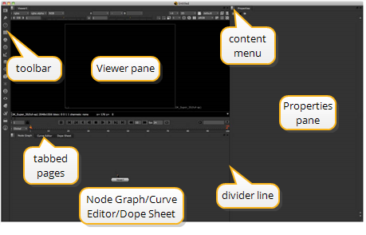

的 Nuke 图标可能出现在桌面上。如果是这样，双击它以启动应用程序。否则，开始 Nuke 使用下面描述的方法之一，假设您已经安装 Nuke 到默认位置。
• 从 开始 菜单，选择 所有程序> 铸造厂 ,然后选择 Nuke 10.5v8 .
• 打开/ 应用程序/ Nuke / 文件夹并双击 Nuke 10.5v8 图标。
• 打开 /Usr/本地/ Nuke 10.5v8 / 文件夹并双击 Nuke 10.5v8 图标。
提示: 如果您在 Linux 下操作，也可以启动 Nuke 从终端的命令行。只需导航到 Nuke 目录并输入目录的名称 Nuke 应用程序。
主的干净副本 Nuke 窗口出现。分隔线将窗口组织成不同的窗格。每个窗格都有一个或多个内容页，由窗格顶部的选项卡分隔。工具栏出现在主窗口的左边缘。

默认情况下，窗格设置为显示查看器、节点图形/曲线编辑器和属性。您将在 “节点图/曲线编辑器” 窗格的 “节点图” 页面中创建此项目的脚本。当项目需要这些屏幕上的控件时，我们将讨论它们。
|
|